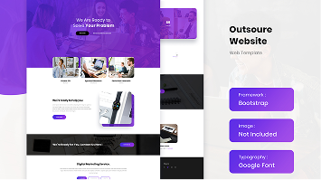

E-commerce Application
A scalable multilingual admin dashboard designed to manage international e-commerce operations, featuring dynamic content control, financial reporting, and region-based system architecture.
Passionate about building robust, scalable, and high-performance full stack web applications. I specialize in the MERN stack (MongoDB, Express, React, Node.js) and love turning complex challenges into simple, elegant, and user-centric solutions.
Get to know me
I'm a passionate Full Stack Developer specializing in the MERN stack with experience building complete, secure, and production-ready web applications. I enjoy designing scalable database models, creating performant REST APIs, and crafting responsive, user-friendly frontend interfaces that make a difference.
I believe in writing clean, well-documented code, designing robust software architectures, and continuously adopting modern software engineering patterns. Whether architecting database schemas or styling interfaces, I focus on performance, scalability, and providing an exceptional user experience.
Let's work together to transform your ideas into robust, scalable web applications that drive real results. Get in touch, and let's start building your digital vision today!
My Services
Building modern, responsive websites and web applications using the latest technologies and best practices.
Creating intuitive and beautiful user interfaces that enhance user experience and drive engagement.
Developing robust and secure backend systems, RESTful API integrations, and database architectures.
Creating websites that look and work perfectly on all devices, with mobile as the primary focus. Creating websites that look and work perfectly on all devices, with mobile as the primary focus. Creating websites that look and work perfectly on all devices, with mobile as the primary focus.
Providing ongoing maintenance, updates, and technical support for existing websites and applications.
Some of my Work

A scalable multilingual admin dashboard designed to manage international e-commerce operations, featuring dynamic content control, financial reporting, and region-based system architecture.
A scalable multilingual admin dashboard designed to manage international e-commerce operations, featuring dynamic content control, financial reporting, and region-based system architecture.
A scalable multilingual admin dashboard designed to manage international e-commerce operations, featuring dynamic content control, financial reporting, and region-based system architecture.
A scalable multilingual admin dashboard designed to manage international e-commerce operations, featuring dynamic content control, financial reporting, and region-based system architecture.
A scalable multilingual admin dashboard designed to manage international e-commerce operations, featuring dynamic content control, financial reporting, and region-based system architecture.
A scalable multilingual admin dashboard designed to manage international e-commerce operations, featuring dynamic content control, financial reporting, and region-based system architecture.
Some of my Work